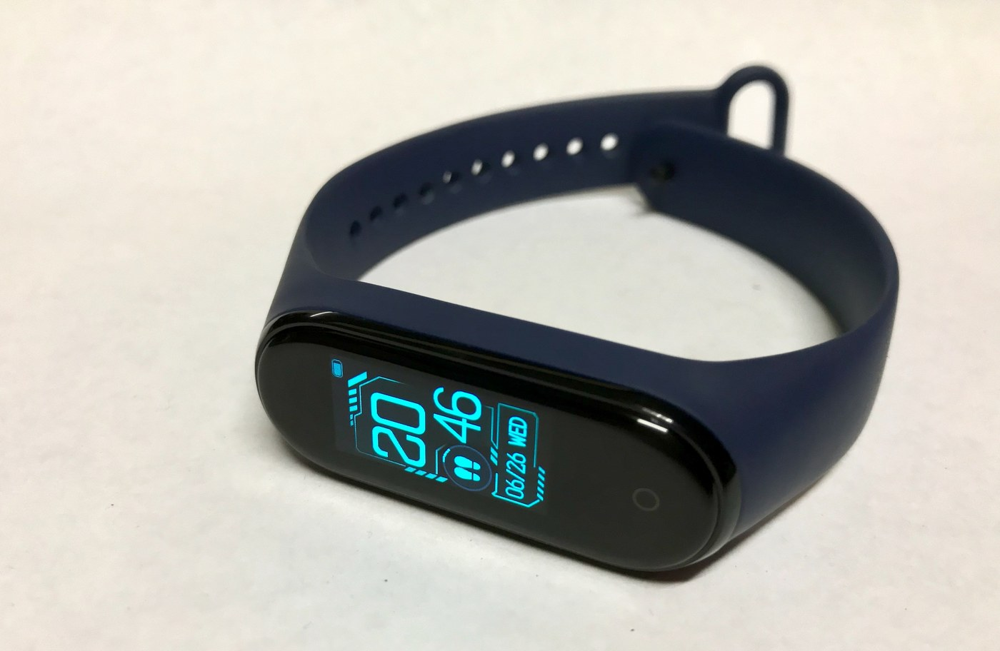

The Autopsy Report · Device #059
Xiaomi Mi Band 4
The $40 fitness band that outsold everything. Inside, a Dialog Bluetooth chip — and a community of enthusiasts who documented what Xiaomi never published.
What is this thing?
The Xiaomi Mi Band 4 is a budget fitness band: a 0.95-inch AMOLED color display in a removable capsule that pops out of its strap for charging. Model XMSH07HM. It tracks activity, heart rate, and sleep over Bluetooth 5.0 BLE, with a 135 mAh battery. Wikipedia · User manual
Not yet on our bench
Straightforward honesty first: BareBoard has not possessed, disassembled, tested, booted, or touched the firmware of this unit. We don't have one on the bench yet. Everything below is built from public records — FCC filings, manufacturer material, datasheets, manuals, and published teardowns — with every claim linked to its source and graded for confidence. When a fact genuinely requires our hands on hardware (boot logs, our own photos, exact board revision of a future unit), we say so out loud.
That framing is what makes publishing now legitimate: this is a public-records autopsy, and it will grow into a bench autopsy the day a unit lands on our desk.
A short history
- June 2019Xiaomi launches the Mi Band 4 in China. Wikipedia
- 2019–2020The band becomes a global bestseller; the enthusiast community documents its hardware and firmware behavior in depth. XDA Forums
The outside
A pill-shaped capsule with a color AMOLED touchscreen, seated in a soft TPU strap. Two charging pins on the capsule's underside mate with the proprietary clip charger. The back carries the optical heart-rate sensor. User manual

The board
Public teardown summaries identify the heart of the Band 4 as a Dialog DA14697 Bluetooth chip, with 512 KB of memory and 16 MB of storage reported alongside it — plus the heart-rate sensor and the AMOLED driver on the capsule's small board. We grade this as Likely: it's consistent across secondary summaries, but Xiaomi never confirmed it in primary material we could reach. Teardown video · XDA Forums
Under the microscope: the chips
What's reported, what each part does, and how sure we are. Confirmed means a primary source. Likely means well-corroborated public records — and here the chip identity rests on secondary summaries, so Likely is the ceiling.
| Chip | What it does | How we know | Dig deeper |
|---|---|---|---|
| Dialog DA14697 | Bluetooth 5.0 BLE system-on-chip — the band's radio and main processor. DA14697 datasheet (mirror) | Likely Reported across secondary teardown summaries. Teardown video | DA14697 datasheet (mirror) · Keil device page |
| Memory / storage 512 KB / 16 MB reported |
Working memory and firmware/data storage. | Likely Reported alongside the chip in secondary summaries — not confirmed in primary material. XDA Forums | — |
| Battery 135 mAh |
Power — the source of the band's multi-week endurance. | Likely Reported in product summaries. Wikipedia | — |
Unidentified in public records: the heart-rate sensor's part number, the AMOLED driver, and the power-management chip.
The government's file on this device
There isn't a U.S. one. We found no FCC filing for the Mi Band 4 (XMSH07HM) — the regulatory record for this model lives in non-U.S. certifications. So no FCC photos or test reports exist to learn from here.
Debug & service modes
Our posture: we listen, we don't knock. Only publicly verified interfaces.
User-facing (from the manual). Pairing, the removable capsule, charging, and a 5 ATM water-resistance rating are all documented. Factory reset runs through the Mi Fit app and the band's own menus. User manual
No public debug interface. No serial console, JTAG header, or diagnostic mode appears in any public record we found. The enthusiast community has documented plenty about the band's behavior — we cover the user-facing parts only, and nothing that touches firmware extraction or authentication.
What the public record says
Community-documented, vendor-silent. Xiaomi publishes almost nothing about the Band 4's internals; nearly everything known comes from teardowns and the XDA enthusiast community. That makes the record rich but secondary — every chip claim here stays at Likely for that reason. XDA Forums
The price-performance story. A color AMOLED, heart-rate sensing, and weeks of battery for around $40 — the Band 4's bill of materials is a masterclass in cost engineering, even if we can only name one chip on it. Wikipedia
What we didn't do
- We have not possessed, disassembled, tested, or booted this device.
- We have not extracted, modified, shared, or reverse-engineered its firmware.
- We document only publicly verified interfaces and user-facing modes — read-only, no lock bypass, no authentication defeat, no credential or key material.
- Anything below marked as unknown stays unknown until the bench says otherwise.
By the numbers
- Model: XMSH07HM — no U.S. FCC filing found
- Chip: Dialog DA14697 (secondary-source — Likely)
- Memory / storage: 512 KB / 16 MB reported (Likely)
- Display: 0.95-inch AMOLED · Radio: Bluetooth 5.0 BLE
- Battery: 135 mAh · Water: 5 ATM
- Launched: June 2019 (China)
Words to know
Every term this page uses, in plain English. No prior knowledge required.
- Capsule
- The Mi Band's removable core — the whole computer pops out of the strap for charging.
- AMOLED
- A display technology where each pixel makes its own light — vivid color on a tiny screen.
- Bluetooth 5.0 BLE
- The low-power Bluetooth standard the band uses to sync with the phone.
- 5 ATM
- Water-resistance rating: roughly, safe to 50 meters of static pressure — swimming, not diving.
- FCC
- The U.S. regulator that approves wireless devices. No filing here means no regulator photos to learn from.
Sources & confidence
- Display, capsule design, charging, 5 ATM, pairing/reset: user manual — Likely.
- Dialog DA14697, 512 KB / 16 MB, 135 mAh, Bluetooth 5.0 BLE: secondary teardown summaries (YouTube teardown, XDA Forums, Wikipedia) — Likely, capped there because no primary source confirms the chip.
- DA14697 datasheet: mirrored PDF — a real datasheet for the reported chip, cited as such.
- No U.S. FCC filing for XMSH07HM: negative result from our search — stated as such.
- Anything not listed here is unknown until the bench says otherwise. We'll say so, out loud, when that's the case.
Serial numbers and QR codes are blacked out of every published photo. Raw originals stay private.
Legal note. BareBoard is an educational project. Everything on this page comes from public records — FCC filings, manufacturer material, datasheets, and published teardowns — plus our own analysis of those records. We don't publish, host, or distribute firmware, keys, passwords, or credentials. Product names and trademarks belong to their respective owners and appear here only to identify the hardware. If you believe anything here infringes your rights, contact us and we'll address it promptly.